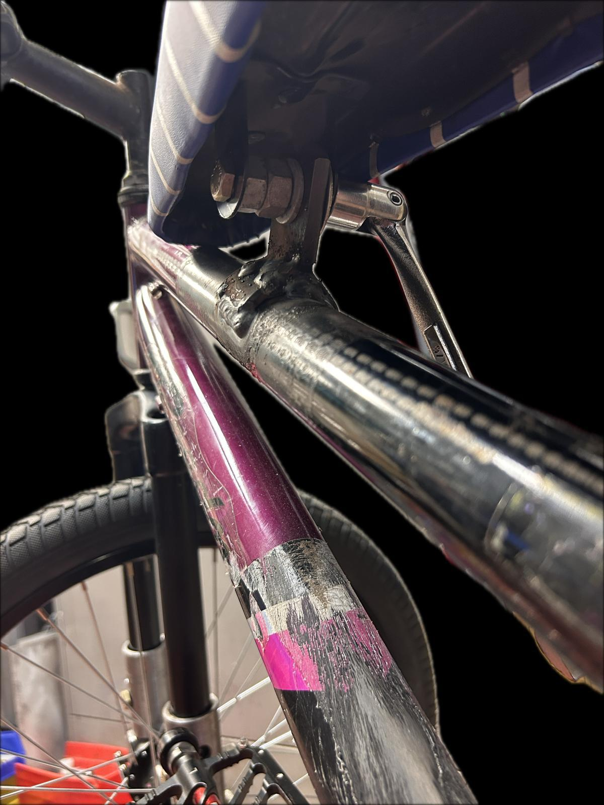
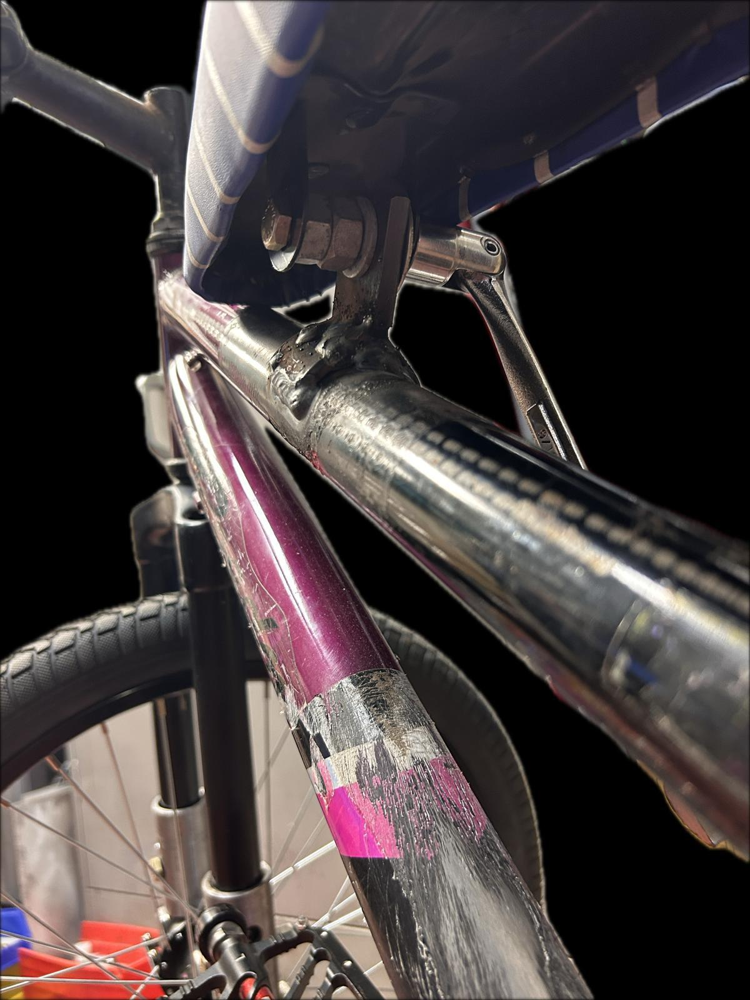
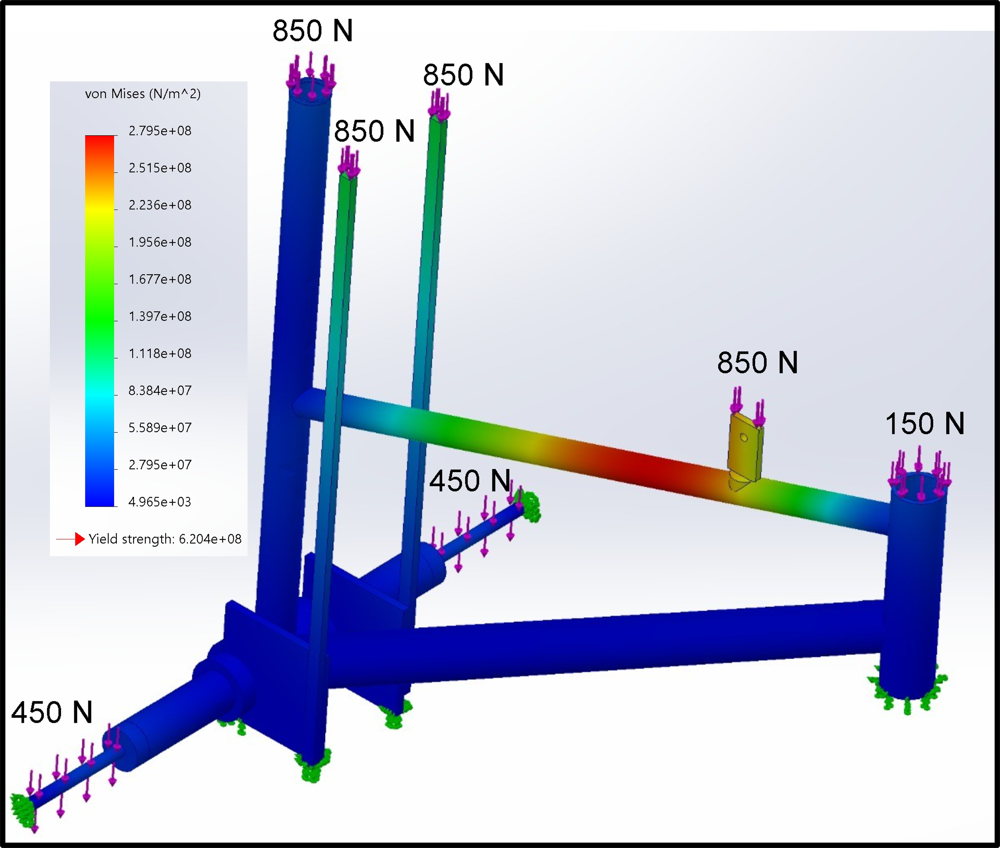
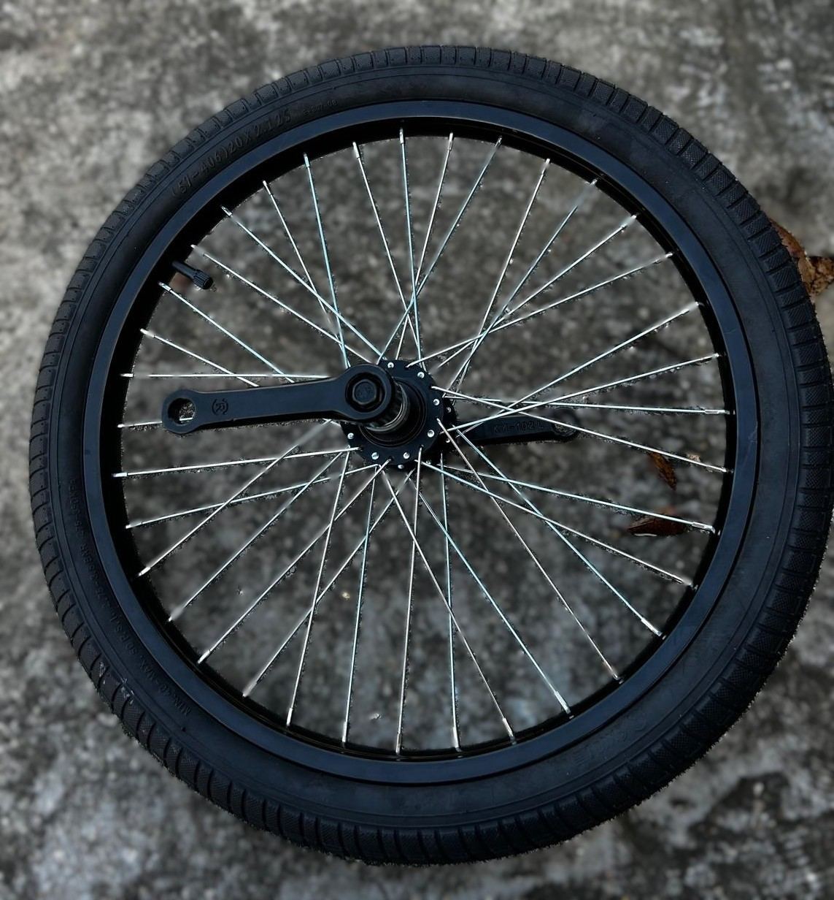
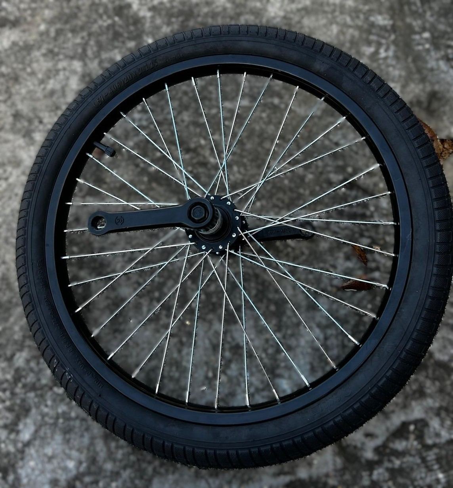

Component Measurements & Re-used Frame Checks


Recycled Parts – Dismantling


Build Progress

 


CAD Drawings & PDFs
- Forks (.drw) PDF
- 0.5-in Spacer (1015 Steel)
- Frame Part (.prt PDF)
- Assembly 1 & 2
- Updated Assembly
- Overall Dimensions
- Frame Bushing
- Axle Bushings (4130)
- Fork-Bushing Assembly
- Rear Frame + Axle
- 4130 Tube Detail


Analysis & FEA



CNC & Machined Parts


 


Final Prototype Photos & Renders


Reference Docs & Specs
Sponsor Logos